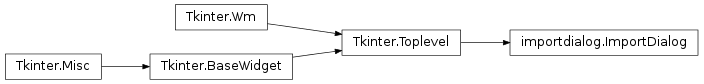

ImportDialog(root, master)[source]¶Dialog window which prompts user for a selection of objects to import as well as showing a customizable list for displaying the data
| Param: | root: root Tk widget, often Tk() |
|---|---|
| Param: | master: the main window, for access of polygonList |
create_bottom_frame()[source]¶Create and display database in listbox, also add lower button frame for import button
create_top_frame()[source]¶Initialize the upper frame of the window in charge of buttons, in order:
creates a top_frame, sets a ‘Search’ label and binds an entry box beside
it, which calls refine_search upon a user releasing a key after pressing.
Then binds the delete button to data_from_db
filter_by_current_file()[source]¶Command function for the check button located beside the entry box in Import Dialog. Lists all shapes given by only the current file when checked. If unchecked displays all entries.
get_current_file_shapes()[source]¶Return a list of all shapes contained in the current file, queries the
database looking for all entries with the column tag that match the
file returned by the rpartitioned Calipso.get_file() function
| Return type: | list |
|---|
receive_advanced_search(observer)[source]¶Receiving method called internally by an observer. When AdvancedSearchDialog is opened an observer is attached to this class, and upon the new ranges being updated this method is procd. The new ranges to query by are given by the dict received, so we can display the advanced search items. Below is a list of all items within the dictionary, with the format Key -> Format -> Type -> Desc
date -> ‘0000-00-00’ -> y-m-d -> The outer date of the time range btime -> ‘00-00-00’ -> hr-m-s -> Beginning time range (btime -> etime) etime -> ‘00-00-00’ -> hr-m-s -> Ending time range blat -> ‘0.0’ -> float -> Beginning latitude range (blat -> elat) elat -> ‘0.0’ -> float -> Ending latitude range balt -> ‘0.0’ -> float -> Beginning altitude range (balt -> ealt) ealt -> ‘0.0’ -> float -> Ending altitude range plot -> PLOTS -> string -> Type of plot (‘backscattered’ etc..) ampm -> ‘am’/’pm’ -> string -> Whether the time range is AM or PM file -> ‘.....hdf’ -> string -> File name
| Parameters: | observer – An advancedsearchdialog.Query object |
|---|
receive_extract_columns(observer)[source]¶Receiving method called internally by an observer bound to an ExtractColumnsDialog
instance. Upon the creation of a ExtractColumnDialog instance an observer is attached
to the ImportDialog. Once the user finalizes the extraction details this function will
be called with a dictionary of value .
| Parameters: | observer – An extractcolumnsdialog.ExtractionList object |
|---|
refine_search(event)[source]¶Function to dynamically narrow the results of a search while the user types into the search bar. Checks if the character is alpha numeric , and if so queries the database for the combined string. A backend stack keeps track of past searches, when the user enters the backspace code a previous instance is popped and reloaded. :param event: search box events